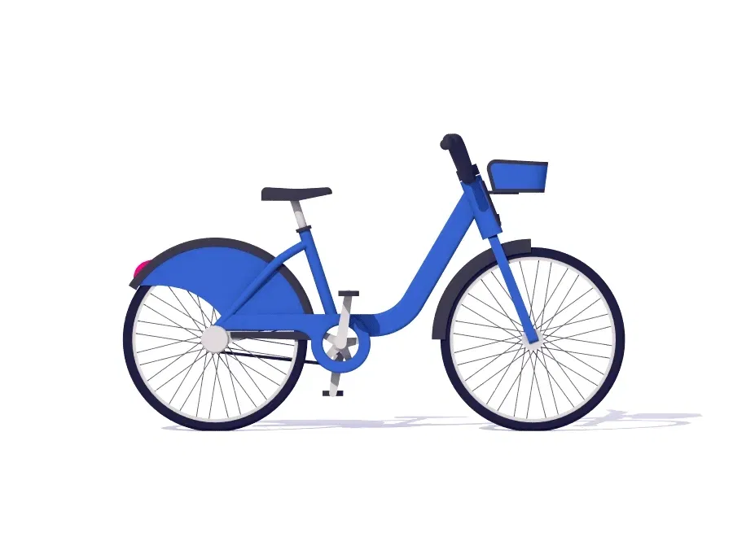
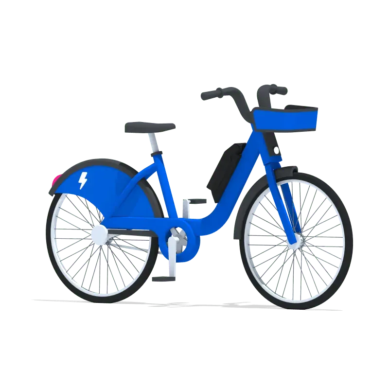
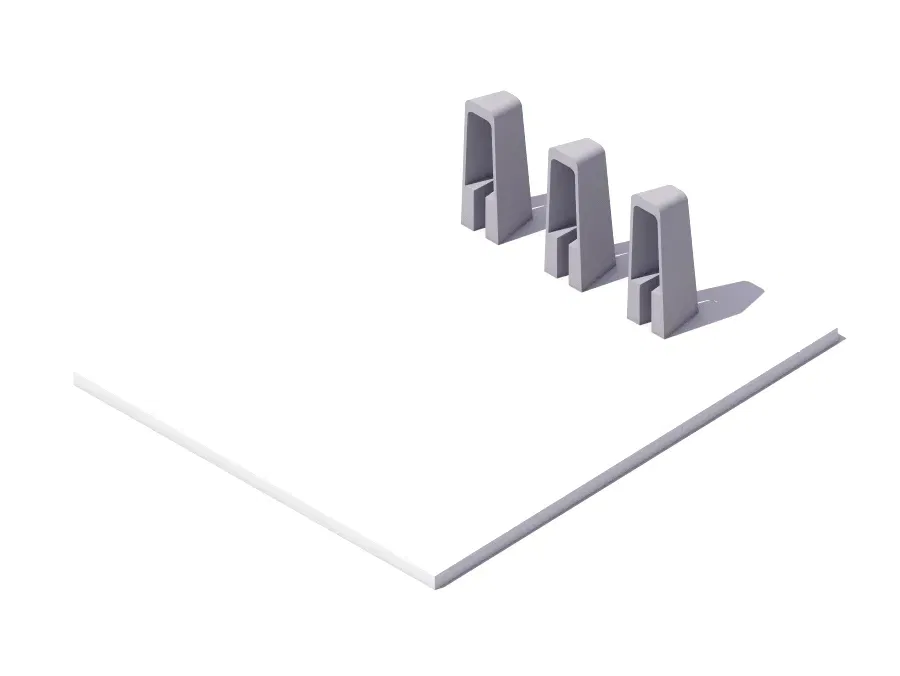

#1
Scale of Individual Choices
184M individual bike rides = removing 15,000+ cars from roads permanently
#2
Convenience Drives Sustainability
People choose bikes for convenience, environment benefits automatically
#3
Peak Hours Reveal True Motivation
Rush hour patterns prove it's about commuting efficiency, not recreation
#4
Infrastructure Creates Behavior Change
Build bike lanes and stations → people automatically choose sustainable transport


